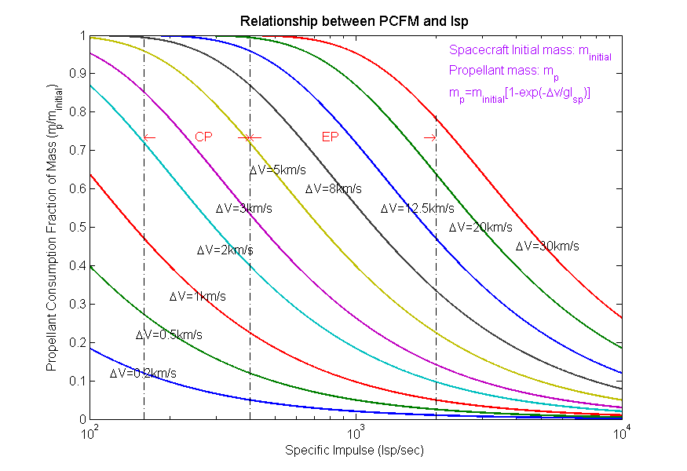

Contents
Description
Initialization
close all, clear all, clc
Input Parameters
Isp = logspace(2, 4, 100000);
TemData = [200 500 1000 2000 3000 5000 8000 12500 20000 30000];
DeltaV = TemData'; g = 9.80665;
Implementation Algorithm
PCFM = 1 - exp(-DeltaV*(1./(g*Isp)));
Output Plotting
figure
plot(Isp, PCFM, '-', 'LineWidth', 2);hold on
plot([ 160, 160], [0, 1], '-.k', 'LineWidth', 1.2)
plot([ 400, 400], [0, 1], '-.k', 'LineWidth', 1.2)
plot([2000,2000], [0, 0.79], '-.k', 'LineWidth', 1.2)
title('Relationship between PCFM and Isp', 'LineWidth', 2, 'FontSize', 13)
xlabel('Specific Impulse (Isp/sec)', 'LineWidth', 3, 'FontSize', 12)
ylabel('Propellant Consumption Fraction of Mass (m_p/m_{initial})', 'LineWidth', 3, 'FontSize', 12)
set(text(160, 0.735, '\leftarrow'), 'FontSize', 12, 'Color', 'r', 'LineWidth', 2)
set(text(250, 0.735, 'CP'), 'FontSize', 12, 'Color', 'r', 'LineWidth', 2)
set(text(360, 0.735, '\rightarrow'), 'FontSize', 12, 'Color', 'r', 'LineWidth', 2)
set(text( 400, 0.735, '\leftarrow'), 'FontSize', 12, 'Color', 'r', 'LineWidth', 2)
set(text( 750, 0.735, 'EP'), 'FontSize', 12, 'Color', 'r', 'LineWidth', 2)
set(text(1800, 0.735, '\rightarrow'), 'FontSize', 12, 'Color', 'r', 'LineWidth', 2)
set(gca, 'xscale', 'log')
set(gca, 'FontSize', 12)
set(text( 120,0.12, '\DeltaV=0.2km/s'), 'FontSize', 12)
set(text( 150,0.22, '\DeltaV=0.5km/s'), 'FontSize', 12)
set(text( 200,0.32, '\DeltaV=1km/s'), 'FontSize', 12)
set(text( 255,0.44, '\DeltaV=2km/s'), 'FontSize', 12)
set(text( 300,0.55, '\DeltaV=3km/s'), 'FontSize', 12)
set(text( 400,0.65, '\DeltaV=5km/s'), 'FontSize', 12)
set(text( 650,0.60, '\DeltaV=8km/s'), 'FontSize', 12)
set(text(1250,0.55, '\DeltaV=12.5km/s'), 'FontSize', 12)
set(text(2250,0.50, '\DeltaV=20km/s'), 'FontSize', 12)
set(text(4000,0.45, '\DeltaV=30km/s'), 'FontSize', 12)
set(text(2250,0.955,'Spacecraft Initial mass: m_{initial}'),'FontSize',12,'Color',[0.67 0.00 1])
set(text(2250,0.900,'Propellant mass: m_p'),'FontSize',12,'Color',[0.67 0.00 1])
set(text(2250,0.845,'m_p=m_{initial}[1-exp(-\Deltav/gI_{sp})]'),'FontSize',12,'Color',[0.67 0.00 1])
set(gcf,'Position',[435 50 875 600])
print -depsc -tiff -r300 PCFM_vs_Isp.eps
set(gcf,'Units','centimeters');
screenposition = get(gcf,'Position');
set(gcf,'PaperPosition',[0 0 screenposition(3:4)],'PaperSize',[screenposition(3:4)]);
print -dpdf -painters PCFM_vs_Isp.pdf
hold off
